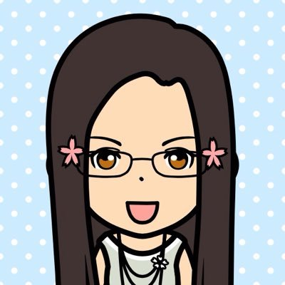

Towards Clinical Application of Enhanced Timed Up and Go with Markerless Motion Capture and Machine Learning for Balance and Gait Assessment
L. Zhang et al. · IEEE Journal of Biomedical and Health Informatics, 30(8), 7072–7081, 2026.

Academic Profile
Professor · School of Artificial Intelligence and Robotics
Hunan University, China
Human movement biomechanics · Intelligent wearable robotics · Rehabilitation engineering
I am a Professor at the School of Artificial Intelligence and Robotics, Hunan University. I received my Ph.D. in Engineering Mechanics (Biomechanics) from KTH Royal Institute of Technology, Sweden, and subsequently conducted postdoctoral research at KTH and Nanyang Technological University, Singapore. My research develops computational and experimental methods for understanding human movement and advancing intelligent wearable and rehabilitation robotic systems.
For the complete and most up-to-date publication list, see Google Scholar or my academic CV.
L. Zhang et al. · IEEE Journal of Biomedical and Health Informatics, 30(8), 7072–7081, 2026.
L. Zhang et al. · IEEE Transactions on Biomedical Engineering, 71(6), 1798–1809, 2024.
L. Zhang et al. · IEEE Transactions on Neural Systems and Rehabilitation Engineering, 31, 3722–3731, 2023.
Funding amounts refer to total project funding where indicated.
Principal Investigator (PI), National Natural Science Foundation of China (NSFC), General Program, Grant No. 62673192. Funding: RMB 500,000.
Principal Investigator (PI), Key Research and Development Program of Hunan Province, Grant No. 2026QK3021. Funding: RMB 2,700,000.
Principal Investigator (PI), National Natural Science Foundation of China (NSFC), Young Scientists Fund (Category C), Grant No. 62503165. Funding: RMB 300,000.
Co-Principal Investigator (Co-PI), Changsha Municipal Health Commission, Regional Medical–Academic–Industry Collaborative Research Program. Total project funding: RMB 2,300,000.
Principal Investigator (PI), National Natural Science Foundation of China (NSFC), Excellent Young Scientists Fund (Overseas). Funding: RMB 2,000,000.
Principal Investigator (PI), Promobilia Foundation, Sweden, Grant No. A22078. Funding: SEK 372,200.
Project Participant, Rehabilitation Research Institute of Singapore (RRIS), Singapore.
Principal Investigator (PI), Biomechanics Modeling and Experimentation Center, KTH Royal Institute of Technology, Sweden, Project No. 770024. Funding: SEK 55,000.
Project Participant, Swedish Research Council, Sweden, Grant No. 2018-00750. Total project funding: SEK 12,000,000.
Project Participant, Promobilia Foundation, Sweden, Grant No. 18200. Total project funding: SEK 11,500,000.
Project Participant, Promobilia Foundation, Sweden, Reference No. 18014. Total project funding: SEK 350,000.
Project Participant, Swedish Research Council, Sweden, Grant No. 2018-04902. Total project funding: SEK 3,600,000.
Project Participant, Ministry of Science and Technology of China, Project No. 2016A020220003. Total project funding: RMB 500,000.
Five patents and patent applications are listed in the academic CV, including work on robotic variable-stiffness joints, automated upper-limb assessment, and multimodal clinical data management.
School of Artificial Intelligence and Robotics
Hunan University, Changsha, China
Email: longbin@hnu.edu.cn